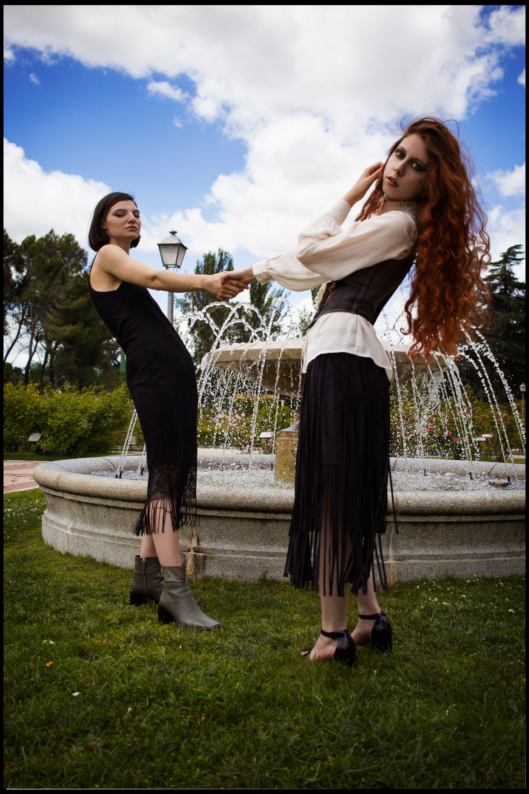
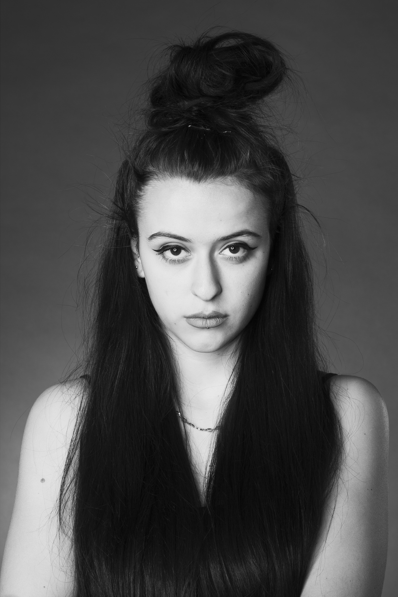

Throughout my life I have been learning to use different means of creation, often self-taught, with which to shape my ideas. These ideas begin the creative processes, sometimes start from what the material itself inspires me, other times my personal context is specially reflected, ordered through poetic writing and giving a second life to those writings with a more visual approach. At other times I simply create an imaginary that I find aesthetic and mainly fun. This website is an example of this, as it has been designed and built entirely by me.